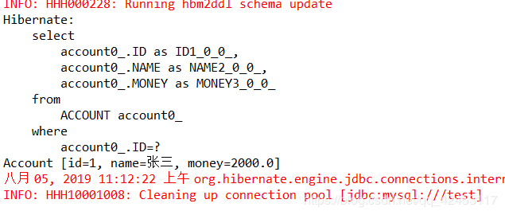

在前面我们学完了Struts2，接下来我们就要去学习第二个框架Hibernate。
那什么是Hibernate？
Hibernate是一个开放源代码的对象关系映射框架，它对JDBC进行了非常轻量级的对象封装，它将POJO与数据库表建立映射关系，是一个全自动的ORM框架，Hibernate可以自动生成SQL语句，自动执行，使得Java程序员可以随心所欲地使用对象编程思维来操纵数据库，Hibernate可以应用在任何使用JDBC的场合，既可以在Java的客户端程序使用，也可以在Servlet/JSP的Web应用中使用。
顺带介绍一下什么是ORM。
ORM：对象关系映射，是一种程序技术，简单来说就是把我们程序中的实体类和数据库表建立起来对应关系。
那为什么要有对象关系映射呢？
假设一下，当你开发一个应用程序的时候，你可能会写不少数据访问层的代码，用来从数据库保存、删除、读取对象信息等等。你在DAO中写了很多的方法来读取对象数据，改变状态对象等等任务，而这些代码很多都是重复的。
对象映射关系赋予了程序一种强大的能力，让开发者仅仅掌握面向对象的思维来操作数据库，即在关系型数据库和业务实体对象之间作一个映射，这样，我们在具体的操作业务对象的时候，就不需要再去和复杂的SQL语句打交道，只要像平时操作对象一样操作它就可以了。
关于Hibernate的一些基本知识了解完之后，我们来编写一个Hibernate的入门项目。
首先我们得编写hibernate的配置文件，在src目录下新建hibernate.cfg.xml文件：
<?xml version="1.0" encoding="UTF-8"?>
<!DOCTYPE hibernate-configuration PUBLIC
"-//Hibernate/Hibernate Configuration DTD 3.0//EN"
"http://hibernate.sourceforge.net/hibernate-configuration-3.0.dtd">
<hibernate-configuration>
<session-factory>
<!-- 配置连接数据库的基本信息 -->
<property name="connection.username">root</property>
<property name="connection.password">123456</property>
<property name="connection.driver_class">com.mysql.jdbc.Driver</property>
<property name="connection.url">jdbc:mysql:///test</property>
<!-- 配置hibernate的基本信息 -->
<property name="dialect">org.hibernate.dialect.MySQL5InnoDBDialect</property>
<!-- 执行操作时是否在控制台打印sql -->
<property name="show_sql">true</property>
<!-- 是否对sql进行格式化 -->
<property name="format_sql">true</property>
<!-- 指定自动生成数据表的策略 -->
<property name="hbm2ddl.auto">update</property>
<!-- 指定关联的.hbm.xml文件 -->
<mapping
resource="com/itcast/hibernate/helloworld/Account.hbm.xml" />
</session-factory>
</hibernate-configuration>这里面就是配置一些相关的信息。
然后我们创建一个Bean类Account：
package com.itcast.hibernate.helloworld;
public class Account {
private Integer id;
private String name;
private double money;
public Account() {
}
public Account(String name, double money) {
this.name = name;
this.money = money;
}
public Integer getId() {
return id;
}
public void setId(Integer id) {
this.id = id;
}
public String getName() {
return name;
}
public void setName(String name) {
this.name = name;
}
public double getMoney() {
return money;
}
public void setMoney(double money) {
this.money = money;
}
@Override
public String toString() {
return "Account [id=" + id + ", name=" + name + ", money=" + money + "]";
}
}接下来我们需要创建对象关系映射的配置文件，在与该类同级的目录下新建Account.hbm.xml文件：
<?xml version="1.0"?>
<!DOCTYPE hibernate-mapping PUBLIC "-//Hibernate/Hibernate Mapping DTD 3.0//EN"
"http://hibernate.sourceforge.net/hibernate-mapping-3.0.dtd">
<hibernate-mapping>
<!-- 使Account类对应数据表ACCOUNT -->
<class name="com.itcast.hibernate.helloworld.Account" table="ACCOUNT">
<!-- id标签中的name为类中的属性名;colum标签中的name为数据表中的列名 -->
<id name="id" type="java.lang.Integer">
<column name="ID" />
<!-- 指定主键的生成方式 native:使用数据库本地的方式-->
<generator class="native" />
</id>
<!-- property表示非id的其它列 -->
<property name="name" type="java.lang.String">
<column name="NAME" />
</property>
<property name="money" type="double">
<column name="MONEY" />
</property>
</class>
</hibernate-mapping>简单地配置一下，该配置文件目的是使类和表进行一个映射。
然后我们编写一下测试代码：
// 1、创建一个SessionFactory对象
SessionFactory sessionFactory = null;
// 1)、创建Configuration对象:对应hibernate的基本配置信息和对象关系映射信息
// 默认关联的是hibernate.hbm.xml文件，如果你的配置文件名是hibernate.hbm.xml，使用无参构造即可
Configuration configuration = new Configuration().configure();
sessionFactory = configuration.buildSessionFactory();
// 2、创建一个Session对象
Session session = sessionFactory.openSession();
// 3、开启事务
Transaction transaction = session.beginTransaction();
// 4、执行保存操作
Account account = new Account("张三",1000);
session.save(account);
// 5、提交事务
transaction.commit();
// 6、关闭Session
session.close();
// 7、关闭SessionFactory
sessionFactory.close();然后运行测试代码，hibernate就会把数据保存到数据库，如果你没有这张表，hibernate会自动帮我们创建好表然后插入数据。
因为hibernate版本的问题，所以这里面会有很多的坑，具体报了什么错大家可以自己百度解决。我这里的hibernate版本是5.X的。
+----+------+-------+
| ID | NAME | MONEY |
+----+------+-------+
| 1 | 张三 | 1000 |
+----+------+-------+
1 row in set (0.00 sec)那么在创建持久化类的时候需要注意下面几个问题：
入门案例我们就编写完了， 相信两个配置文件的配置信息大家都能明白，注释也写得很清楚，那么关于测试代码的一些类API，这里分别介绍一下。
上面说到了插入数据，那么这里说一下如何使用hibernate完成更新操作。
SessionFactory sessionFactory = null;
Configuration configuration = new Configuration().configure();
sessionFactory = configuration.buildSessionFactory();
Session session = sessionFactory.openSession();
Transaction transaction = session.beginTransaction();
Account account = session.get(Account.class, 1);
account.setMoney(2000);
session.update(account);
transaction.commit();
session.close();
sessionFactory.close();运行然后查询数据库：
+----+------+-------+
| ID | NAME | MONEY |
+----+------+-------+
| 1 | 张三 | 2000 |
+----+------+-------+
1 row in set (0.00 sec)接下来是查询。
SessionFactory sessionFactory = null;
Configuration configuration = new Configuration().configure();
sessionFactory = configuration.buildSessionFactory();
Session session = sessionFactory.openSession();
Transaction transaction = session.beginTransaction();
Account account = session.load(Account.class, 1);
System.out.println(account);
transaction.commit();
session.close();
sessionFactory.close();运行结果：

最后是删除。
SessionFactory sessionFactory = null;
Configuration configuration = new Configuration().configure();
sessionFactory = configuration.buildSessionFactory();
Session session = sessionFactory.openSession();
Transaction transaction = session.beginTransaction();
Account account = session.get(Account.class, 1);
session.delete(account);
transaction.commit();
session.close();
sessionFactory.close();运行结果：
mysql> select * from account;
Empty set (0.00 sec)关于增删改查的操作是非常简单的，只要会一个，其它的就都能会，因为道理是一样的。当然关于hibernate的使用远不止这么点功能，但本篇文章只是为了让你尽快入门，所以一些更高级的功能我打算写在进阶里。